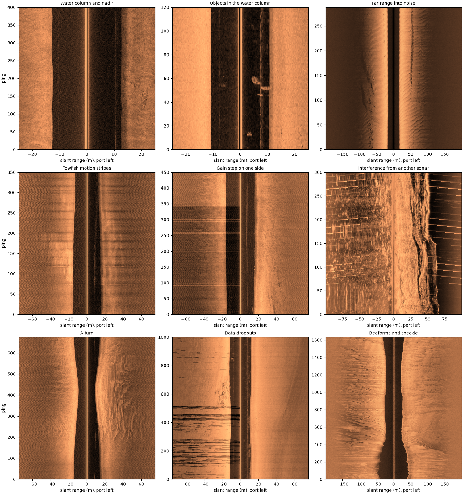
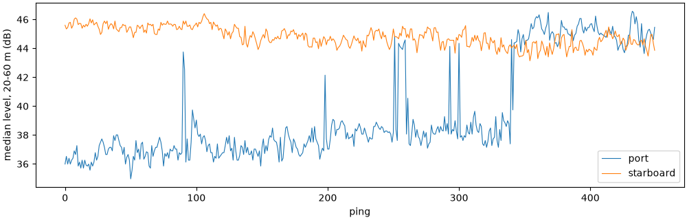

Note
Go to the end to download the full example code.
Common sidescan artifacts#
Much of what a sidescan image shows is not seabed. The towfish moves, the recorder changes its gain, other sonars ping, the GPS updates slowly and the signal fades into noise at long range. Each leaves its own mark, and an analyst or a detector trained on images sees all of them. This page shows the common ones on public recordings, with what causes each, a number that tells it apart, and what sidescanpy offers for it.
Every image is drawn the same way: native ping by slant range, the samples as recorded (the recorder’s own gain, no TVG added) in dB, port on the left. Most of these can only be found, fixed or masked with the raw pings and the aux data, before the image is cut into tiles.
Data: BGS London Gateway (Open Government Licence v3.0, contains data supplied by UKRI), USGS Grand Bay (U.S. public domain), JNCC Wight-Barfleur Reef and mid-Irish Sea (Open Government Licence v3.0); see Example data.
Usage: python examples/gallery/plot_common_artifacts.py [output_dir]
# 2026 rshomberg@uri.edu
import sys
from pathlib import Path
import matplotlib.pyplot as plt
import numpy as np
from sidescanpy import analysis, datasets
from sidescanpy.io import read_and_convert
from sidescanpy.log import configure_logging
from sidescanpy.processing import (
altitude_from_bottom_track,
aux_update_events,
compute_geometric_ranges,
)
out = Path(sys.argv[1]) if len(sys.argv) > 1 else Path(".")
out.mkdir(parents=True, exist_ok=True)
# The readers warn about known quirks of these files (sample scaling,
# sound velocity); see the source format pages.
configure_logging("ERROR")
def line(name, freq_key=None):
"""One frequency of a public line, as recorded."""
survey = read_and_convert([datasets.fetch(name)], fmt="xtf", nav_crs="EPSG:32631")
return survey, survey.get_frequency(freq_key or survey.frequencies[-1]).dataset
def native(ds, pings, half_range_m):
"""Ping-by-signed-slant-range image in dB (port left), its extent and the sample size."""
ds = ds.isel(ping=slice(*pings))
sound = float(np.nanmedian(ds["sound_vel_ms"].values))
sample_m = (sound if sound > 1000 else 1500.0) / (2 * ds.attrs["sample_rate_hz"])
n = min(int(half_range_m / sample_m), ds.sizes["sample"])
amp = np.abs(ds["backscatter_intensity"].values[:, :, :n].astype(float))
db = 20 * np.log10(np.concatenate([amp[:, 0, ::-1], amp[:, 1]], axis=1) + 1.0)
first = int(ds["ping"].values[0])
return db, [-n * sample_m, n * sample_m, first, first + db.shape[0]], sample_m
def show(ax, image, extent, title):
lo, hi = np.nanpercentile(image, [1, 99.5])
ax.imshow(image, cmap="copper", vmin=lo, vmax=hi, origin="lower", aspect="auto", extent=extent,
interpolation="antialiased")
ax.set_title(title, fontsize=10)
ax.set_xlabel("slant range (m), port left")
def side_levels(db, n_side, near, far, sample_m):
"""Per-ping median dB of each side between ``near`` and ``far`` metres of slant range."""
a, b = int(near / sample_m), int(far / sample_m)
port = np.median(db[:, n_side - b:n_side - a], axis=1)
stbd = np.median(db[:, n_side + a:n_side + b], axis=1)
return port, stbd
Load the lines#
Nine short stretches from seven public lines, each chosen because it shows one artifact clearly.
_, aisha05 = line("bgs_london_gateway_aisha_05.xtf")
_, ash11 = line("bgs_london_gateway_ash_11.xtf")
_, barfleur_h = line("jncc_wight_barfleur_20130321174522H.xtf")
_, aisha15 = line("bgs_london_gateway_aisha_15.xtf")
_, grand_bay = line("usgs_grand_bay_150602133300.xtf", "hz_100000")
_, aisha16 = line("bgs_london_gateway_aisha_16.xtf")
_, ash34 = line("bgs_london_gateway_ash_34.xtf")
_, irish_sea = line("jncc_mid_irish_sea_MIS15_2.xtf", "hz_400000")
barfleur_l_survey, barfleur_l = line("jncc_wight_barfleur_20130321174522L.xtf")
PANELS = [
("Water column and nadir", aisha05, (1600, 2000), 25),
("Objects in the water column", ash11, (600, 720), 25),
("Far range into noise", barfleur_h, (0, None), 200),
("Towfish motion stripes", aisha15, (600, 950), 75),
("Gain step on one side", aisha05, (0, 450), 75),
("Interference from another sonar", grand_bay, (400, 700), 100),
("A turn", aisha16, (0, 675), 75),
("Data dropouts", ash34, (0, 1000), 75),
("Bedforms and speckle", irish_sea, (0, None), 200),
]
images = {title: native(ds, pings, r) for title, ds, pings, r in PANELS}
fig, axes = plt.subplots(3, 3, figsize=(15, 16), constrained_layout=True)
for ax, (title, (db, extent, _)) in zip(axes.flat, images.items()):
show(ax, db, extent, title)
for ax in axes[:, 0]:
ax.set_ylabel("ping")
fig.savefig(out / "common_artifacts.png", dpi=150)

Water column and nadir#
Until the sound reaches the seabed under the towfish there is nothing to echo, so every ping starts with a dark band as wide as the towfish’s altitude. The faint line inside it on the starboard side, at about 10 m, is likely the echo from the sea surface (not confirmed). In a ground-range or map view the water column has no position and disappears, leaving a gap along the track.
What to do: analyze_nadir() finds the
first bottom return on every ping, the bottom_track step fills a
missing altitude from it, and
compute_geometric_ranges() gives the
water column no ground range.
print(f"recorded altitude: {np.nanmedian(aisha05['altitude_m'].values[1600:2000]):.1f} m")
recorded altitude: 12.5 m
Objects in the water column#
The blobs inside the dark band are echoes from things in the water between the towfish and the seabed: fish, a school or debris. They are real echoes, but not seabed, and a map drops them with the rest of the water column. On a tile they look like objects on the bottom.
Far range into noise#
The echo weakens with range by spreading and absorption, and absorption grows with frequency. At about 547 kHz this line’s seabed sinks into the receiver noise long before the 200 m the recorder kept, and the outer part of the swath is noise, not dark seabed.
What to do: estimate_usable_range()
finds where the level stops falling; crop or mask beyond it
(crop_far_range_noise()).
channel = compute_geometric_ranges(altitude_from_bottom_track(barfleur_h.load()))
usable = analysis.estimate_usable_range(channel, value_var="backscatter_intensity", bin_width_m=2.0)
print(f"usable range {usable.usable_range_m:.0f} m of {float(channel['slant_range_m'].max()):.0f} m recorded")
usable range 66 m of 200 m recorded
Towfish motion stripes#
Bright and dark bands cross the whole swath every 20 pings or so, on both sides at once. The towfish is pitching or heaving in the waves, tilting its beams on and off the seabed. Port and starboard brighten and dim together, which seabed would not do; this file records no pitch or heave to confirm it.
What to do: no correction; know it is there. A detector will see stripes at the wave period.
db, extent, sample_m = images["Towfish motion stripes"]
port, stbd = side_levels(db, db.shape[1] // 2, 20, 60, sample_m)
def detrend(x, window=61):
return x - np.convolve(np.pad(x, window // 2, mode="edge"), np.ones(window) / window, mode="valid")
r = np.corrcoef(detrend(port), detrend(stbd))[0, 1]
print(f"port and starboard levels, ping to ping: correlation {r:.2f}")
port and starboard levels, ping to ping: correlation 0.81
Gain step on one side#
For the first 340 pings the port side is about 8 dB darker than the rest of the line, then it jumps back; starboard does not change. The recorder changed the port receiver’s gain. A few single pings are bright across the port swath, which is the same kind of event lasting one ping. Neither is in the seabed.
db, extent, sample_m = images["Gain step on one side"]
port, stbd = side_levels(db, db.shape[1] // 2, 20, 60, sample_m)
fig, ax = plt.subplots(figsize=(10, 3.2), constrained_layout=True)
pings = np.arange(extent[2], extent[3])
ax.plot(pings, port, lw=0.8, label="port")
ax.plot(pings, stbd, lw=0.8, label="starboard")
ax.set_xlabel("ping")
ax.set_ylabel("median level, 20-60 m (dB)")
ax.legend()
print(f"port minus starboard: {np.median(port[:300] - stbd[:300]):+.1f} dB before ping 340, "
f"{np.median(port[360:] - stbd[360:]):+.1f} dB after")

port minus starboard: -7.6 dB before ping 340, +0.9 dB after
What to do: plot each side’s level along the line, as above, before
trusting levels between parts of a survey. Single bright pings can be
masked with mask_bright_ping_rows(); a long
step has to be handled as two pieces of data.
Interference from another sonar#
Short bright dashes at a fixed range scatter across both sides, repeating every few pings and stepping in range from one to the next. Another sonar on the same survey (here most likely the sub-bottom profiler) pings out of step with this one, and its pulses arrive at times unrelated to the seabed.
What to do: nothing in sidescanpy removes them. A median filter across pings does, but it also smooths small real objects; masking them needs the other sonar’s ping times.
A turn#
The towfish swings through a turn of about 160°. It slows and sinks, so the water column narrows; the inner side is smeared as pings overlap, and the outer side fans apart, leaving gaps between pings at long range. Turns also break the assumptions behind course over ground and a straight-astern layback.
heading = np.unwrap(np.radians(aisha16["heading_deg"].values[:675]))
print(f"heading change over the turn: {np.degrees(heading[-1] - heading[0]):+.0f} deg")
heading change over the turn: +167 deg
What to do: keep turns out of mosaics and training sets.
split_by_segments() cuts a line into
clean segments.
Data dropouts#
Black streaks on the port side only: runs of samples far below anything the seabed returns, from a recording or telemetry loss (the file does not say which). They are not a very dark seabed; they carry no measurement.
amp = np.abs(ash34["backscatter_intensity"].values[:1000, :, 500:2500].astype(float))
typical = np.median(amp, axis=(0, 2))
low = amp < 0.05 * typical[None, :, None]
print(f"typical level: port {typical[0]:.0f}, starboard {typical[1]:.0f} (counts); "
f"samples under 5 % of it: port {low[:, 0].mean():.2%}, starboard {low[:, 1].mean():.2%}")
typical level: port 172, starboard 204 (counts); samples under 5 % of it: port 1.25%, starboard 0.00%
What to do: samples recorded as exactly zero are masked before
resampling (mask_dropouts()), so they
are interpolated over instead of spreading into dark spots. These
runs are low but not zero, and sidescanpy does not catch them yet;
mask them by level, as the line above counts them.
Bedforms and speckle#
Sand waves on this mid-Irish Sea line: each crest is bright on the side facing the sonar and casts a shadow behind it, an object-sized bright and dark pair. Speckle, the grain over everything, comes from many small scatterers adding up with random phases. Both are real seabed, not artifacts, but they make the marks a detector has to learn to ignore.
Not shown#
Some artifacts do not appear clearly in the public data used here: the towfish’s own wake and propeller bubbles crossed in a turn, sound reaching the seabed by a surface bounce (multipath), crosstalk between frequencies, and yaw.
Total running time of the script: (0 minutes 24.266 seconds)